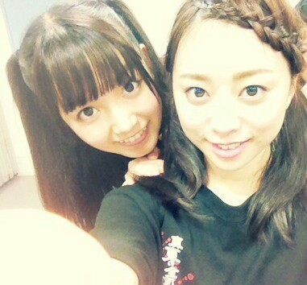
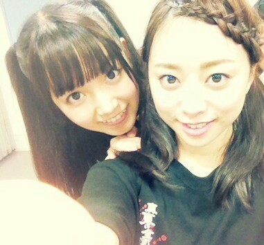

| 2013/10 09 Wed | ひめたん(*>ω<*)そ の353 |
前回、前々回の記事では
本当にたくさんのあたたかいコメント
ありがとうございました(´;ω;｀)
もちろん数がすべてじゃないけど
でもびっくりしました！
まったく撮影前に読むんじゃないよね
うるうるしてきちゃって
あひゃー目がー腫れるーってなりましたー
反映待ちのもあるみたいだから
それも全部読むからねっ
公式サイトのメッセージも
ちょっとずーつゆっくり読んでますよー♪
なんか、本当にたくさんの方に
応援していただいてるんだなって
改めて感じました(*^ω^*)
もっと自信持ってって言っていただいたので
うん。自信持てるようになりたいなー
とりあえず！元気になった！
これからもがんばるので
かわらず仲良くしてくださいねーっ
お待たせしました代々木レポ！

さらさらハーフツインしました(〃ω〃)
みなさんに相談したら
ハーフツインとお団子が評判で
どーしよっかなーて思ったんだけど
お団子はもしかしたら
踊ってて崩れちゃうかもなーと思って
さらにくるくるハーフツインは
大阪公演でやったなーってことで
今回はさらさらハーフツイン♪
お団子もいつかまたするねー
ひめたんハーフツイン好きだなー
ライブあったらまたやろっかなー
うん？高校２年生だよおお
......さて、
来てくださったみなさん
本当にありがとうございました！
ステージからみる景色は
本当にきれいだったんだよー∩^ω^∩
これは各地をまわったときから
思ってたことだけど
ラストの乃木詩のときに照明が落ちて
会場中がサイリウムの光で包まれるあの感じが
本当に大好きでした！
会場中をぐるぐるしたので
みなさんの近くにもちゃーんと行ったよー
外周からは結構おかおハッキリみえるので
緊張もしたけど、でもほっこりしましたっ
これが乃木坂ファミリーのみなさんかーって♪
はじめてライブきたよって方も
たくさんいらっしゃったと思うけど
どうかな。楽しかったかな。また来てくれるかな。
今回は全国ツアーの集大成ってことだったので
夏に学んだことももちろん活かさなきゃなんだけど
やっぱり代々木ともなると
さらにもういっこステップアップしなきゃ
このライブは成立しなかったと思うのよねー
だからみんなで力を合わせてがんばりました
２期生さんとも今回はたくさん踊って
みんなで乃木坂46なんだなって思ったよー
れなりんも最後はステージにあがって
全員で全国ツアー締めくくれてよかった＊
最高のライブでした！
みなさん一緒に盛り上げてくれたりして
ありがとうございました(*^ω^*)
普段まるで運動をしてないひめたんは
まーだ筋肉痛の余韻に浸ってます☆
セットリストは運営ブログまたは
かなりん (中田花奈ちゃん)ブログまで。
また海流やったよ！海流海流♪

ねねころ (伊藤寧々ちゃん)
かわいいおでこ。
おでこ出せるって素晴らしいよねー
えっでもねでもね
この日のひめたんの前髪も
なかなか神がかってると思うんだ。
そして昼公演のサプライズ発表
年末武道館ライブ！
12月20日！
もうほんとに嬉しい！どうしよう！
乃木坂だけで
武道館でライブさせていただけるなんて。
やるからにはさらにステキなステージに
しなきゃだよねー(｀・ω・´)ゝ
本当にたくさんのあたたかいコメント
ありがとうございました(´;ω;｀)
もちろん数がすべてじゃないけど
でもびっくりしました！
まったく撮影前に読むんじゃないよね
うるうるしてきちゃって
あひゃー目がー腫れるーってなりましたー
反映待ちのもあるみたいだから
それも全部読むからねっ
公式サイトのメッセージも
ちょっとずーつゆっくり読んでますよー♪
なんか、本当にたくさんの方に
応援していただいてるんだなって
改めて感じました(*^ω^*)
もっと自信持ってって言っていただいたので
うん。自信持てるようになりたいなー
とりあえず！元気になった！
これからもがんばるので
かわらず仲良くしてくださいねーっ
お待たせしました代々木レポ！
さらさらハーフツインしました(〃ω〃)
みなさんに相談したら
ハーフツインとお団子が評判で
どーしよっかなーて思ったんだけど
お団子はもしかしたら
踊ってて崩れちゃうかもなーと思って
さらにくるくるハーフツインは
大阪公演でやったなーってことで
今回はさらさらハーフツイン♪
お団子もいつかまたするねー
ひめたんハーフツイン好きだなー
ライブあったらまたやろっかなー
うん？高校２年生だよおお
......さて、
来てくださったみなさん
本当にありがとうございました！
ステージからみる景色は
本当にきれいだったんだよー∩^ω^∩
これは各地をまわったときから
思ってたことだけど
ラストの乃木詩のときに照明が落ちて
会場中がサイリウムの光で包まれるあの感じが
本当に大好きでした！
会場中をぐるぐるしたので
みなさんの近くにもちゃーんと行ったよー
外周からは結構おかおハッキリみえるので
緊張もしたけど、でもほっこりしましたっ
これが乃木坂ファミリーのみなさんかーって♪
はじめてライブきたよって方も
たくさんいらっしゃったと思うけど
どうかな。楽しかったかな。また来てくれるかな。
今回は全国ツアーの集大成ってことだったので
夏に学んだことももちろん活かさなきゃなんだけど
やっぱり代々木ともなると
さらにもういっこステップアップしなきゃ
このライブは成立しなかったと思うのよねー
だからみんなで力を合わせてがんばりました
２期生さんとも今回はたくさん踊って
みんなで乃木坂46なんだなって思ったよー
れなりんも最後はステージにあがって
全員で全国ツアー締めくくれてよかった＊
最高のライブでした！
みなさん一緒に盛り上げてくれたりして
ありがとうございました(*^ω^*)
普段まるで運動をしてないひめたんは
まーだ筋肉痛の余韻に浸ってます☆
セットリストは運営ブログまたは
かなりん (中田花奈ちゃん)ブログまで。
また海流やったよ！海流海流♪

ねねころ (伊藤寧々ちゃん)
かわいいおでこ。
おでこ出せるって素晴らしいよねー
えっでもねでもね
この日のひめたんの前髪も
なかなか神がかってると思うんだ。
そして昼公演のサプライズ発表
年末武道館ライブ！
12月20日！
もうほんとに嬉しい！どうしよう！
乃木坂だけで
武道館でライブさせていただけるなんて。
やるからにはさらにステキなステージに
しなきゃだよねー(｀・ω・´)ゝ

 ひめたんはスイートポテトと栗饅頭
ひめたんはスイートポテトと栗饅頭
どっち派ですか？
スイートポテトかな。
秋スイーツ食べてないよおお秋終わってまうよおお
あっときめきアイスも発売されたよー！
ねーねーひめたんってバイク好き？
かっくいーよね！
ひめたんのぱぱはバイク乗る人だよ＼(^O^)／
ひめたーんも楽しそうだから乗ってみたいけど
怖い......やっぱ乗れぬ。
ひめたんは朝苦手？
最近は苦手(´・ω・｀)
一応目覚まし通りに起きる体ですよう
遠征先でお泊まりしたら
目覚まし係をかってでます！
ひめたん腕時計もってる？
持ってるよー♪
最近ままが選抜のお祝いに買ってくれたんだよー
時間を大切にするんだよって。
らりん(永島聖羅ちゃん)と腕時計について
語りたいよね。らりーん！
ひめたんビームってどんな味がするのー？？笑
食べてみる？(<・ω・>)
バニラの香りがするかもしれないよ？
いくちゃんが変身する
（テンション高くなる）のは何故だと思う
おうちでもあんな感じって
ゆってた気がするよー
だからきっとリラックスしてると
ゆるんじゃうんじゃないですかねー？
いいこと(^O^)！
 ひめたんビームを鏡に向かってやると
ひめたんビームを鏡に向かってやると
ひめたんどーなっちゃうの？？
うーん即死かな(〃ω〃)←
友達の友達の友達がきいちゃんって
なんでわかったの？
友達が
「友達の友達に乃木坂のメンバーいるらしい！」
って教えてくれて、話聞いてると
きいちゃんだった(^O^)
そう、昨日は全員で撮影でしたー
今夜はメンバーちゃんとお泊まりー♪
(＊´・ω・＊)
コメント(355)
2013/10/09 21:36